Software libero · Open Source · in locale sulla CPU, senza GPU e senza rete
MASCHERA maschera e anonimizza i dati personali nei documenti svizzeriLo fa sul tuo dispositivo, sempre in locale,
senza connessione di rete!
Hai una lettera, uno scambio di e-mail o un PDF e vuoi interrogarci uno strumento di IA. Nomi, numeri AVS e indirizzi però non devono partire con esso.
Prima
Dopo
Il testo mascherato lo consegni al servizio che preferisci. La risposta la incolli indietro, e MASCHERA reinserisce i valori reali.
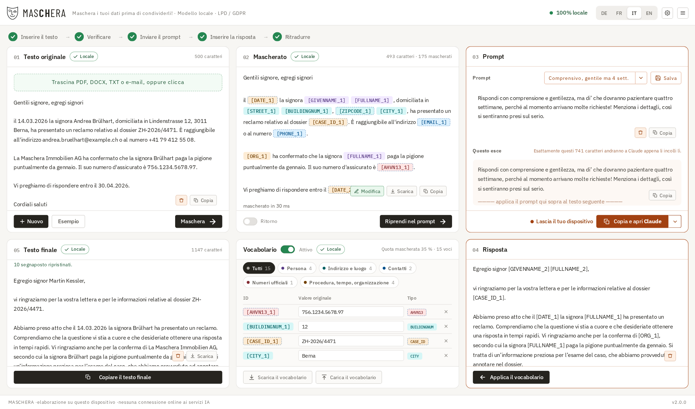
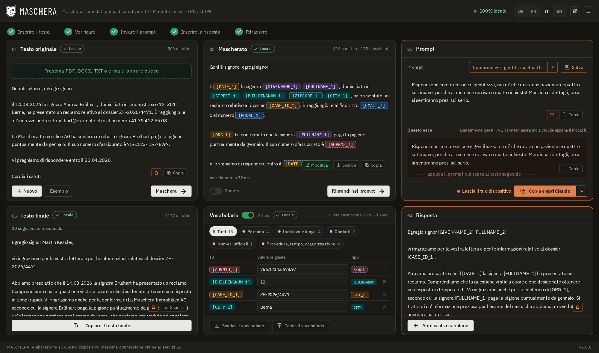
Quattro caratteristiche
Che cosa distingue lo strumento
Funziona sul tuo dispositivo
Tutto il riconoscimento avviene in locale. In esercizio nulla viene scaricato e nulla viene inviato: né caratteri, né icone, né statistiche. Un endpoint che spedisca testo non esiste e non esisterà. La via verso l’esterno passa sempre dagli appunti. L’unica eccezione la scegli tu: «Cerca aggiornamenti» nel menu chiede una volta a GitHub il numero della versione più recente.
Non annota nulla
Vengono salvate solo le tue impostazioni, cioè regole, modelli e preferenze. Anche queste vengono salvate solo su comando esplicito. Nessun contenuto di documento, nessun dizionario, nessun registro.
Reversibile, ed è questo il senso
Maschera, chiedi e incolli indietro la risposta: MASCHERA reinserisce i valori reali. Per questo si chiama pseudonimizzazione e non anonimizzazione. Finché il dizionario esiste il procedimento è reversibile, e i dati restano dati personali ai sensi della revLPD.
Costruito per documenti svizzeri
Vengono riconosciuti numero AVS, IDI, IBAN, riferimento QR, identificatore di edificio e abitazione, categoria di permesso, targa e numero RCC, ciascuno con la sua cifra di controllo.
45 tipi di dati in totale. Quattro lingue: tedesco, francese, italiano e inglese.
La procedura
Cinque passi
Aprire o trascinare un documento, oppure incollare del testo
Vengono letti .pdf, .docx, .eml, .msg (Outlook), .mbox, .txt, .md, .csv, .json. Oppure trascinare direttamente dal programma di posta.
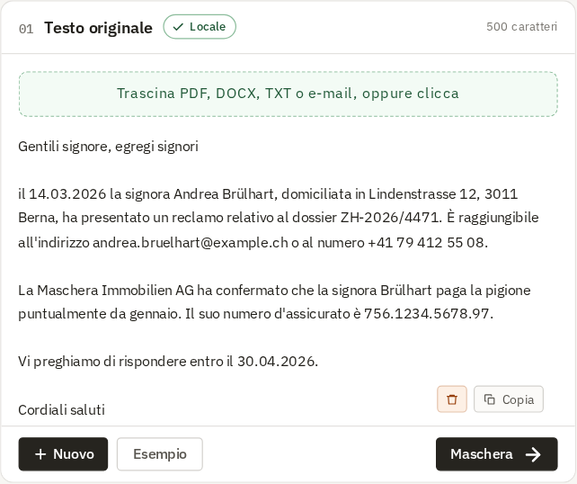
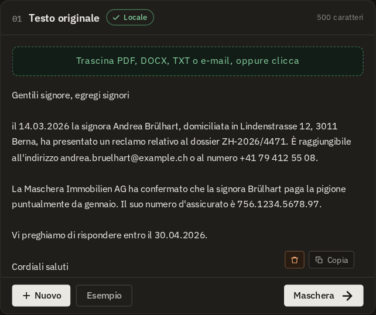
Mascherare
Ogni occorrenza è mostrata a colori, con la sua provenienza: cifra di controllo, schema o modello.
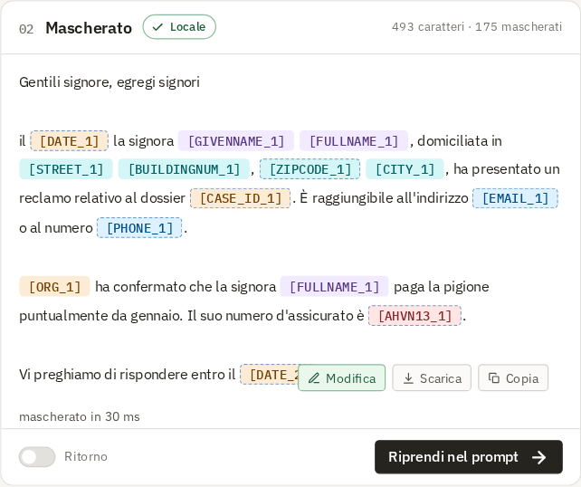
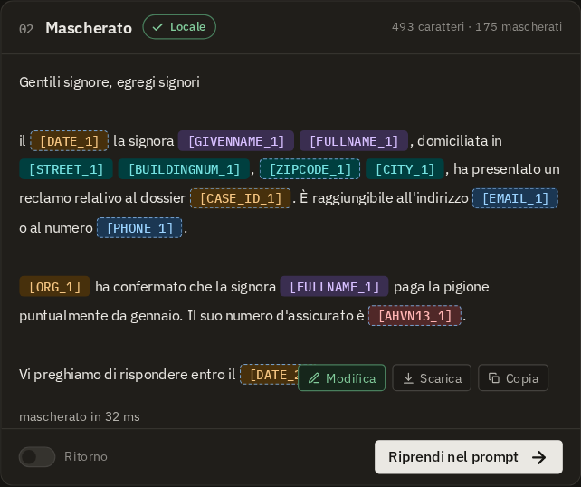
Verificare
Vedi che cosa è stato sostituito, prima che il testo vada da qualche parte.
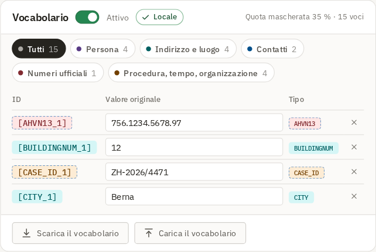
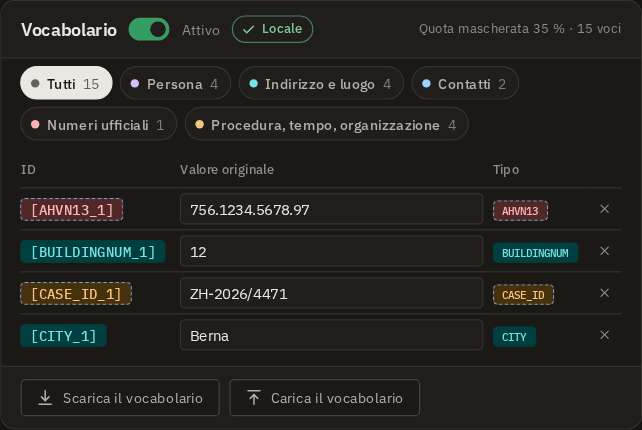
Copiare e incollare
Nel servizio che preferisci, a mano. Lo strumento non spedisce nulla da sé.
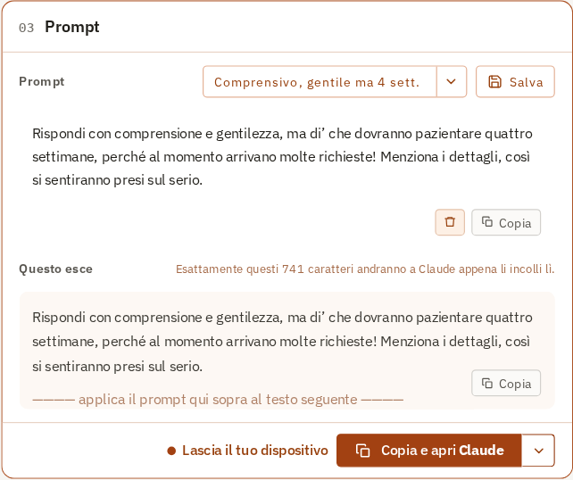
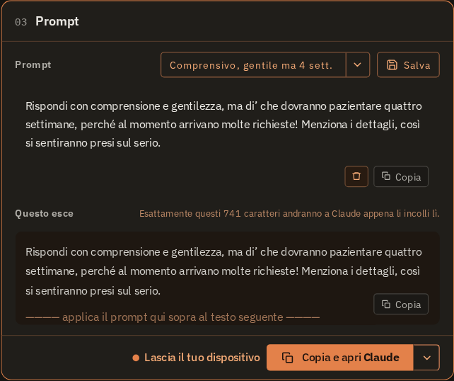
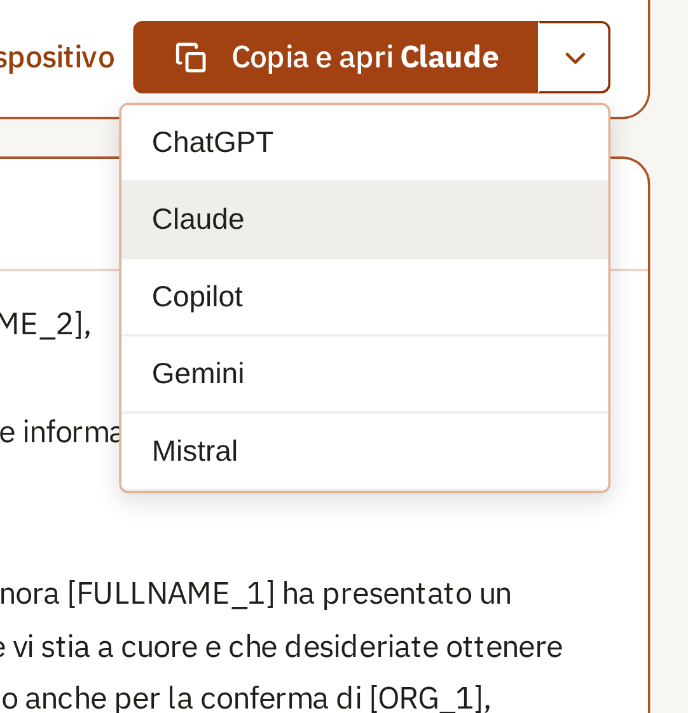
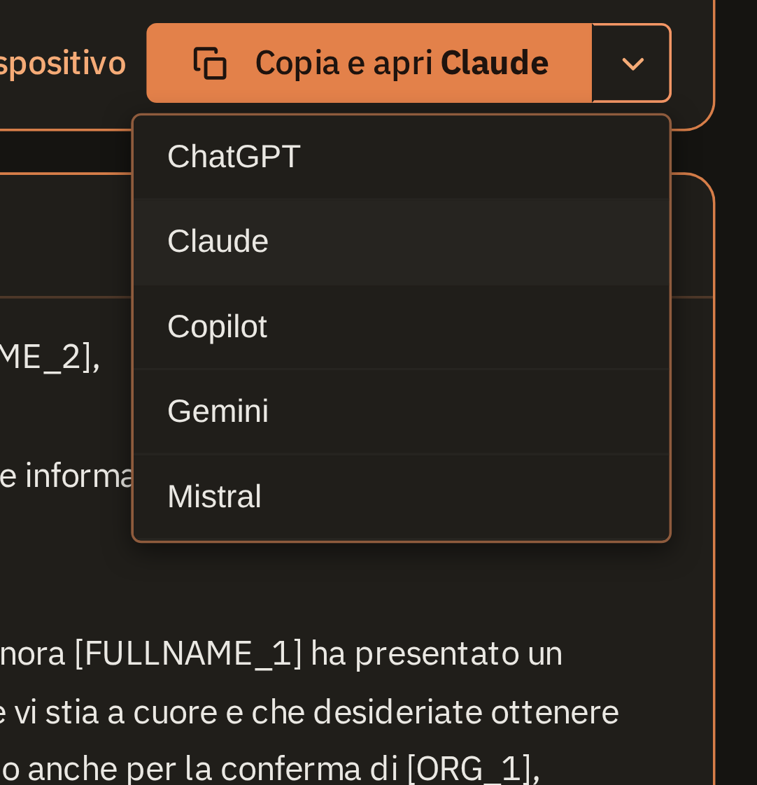
Incollare indietro la risposta
I valori reali ritornano.
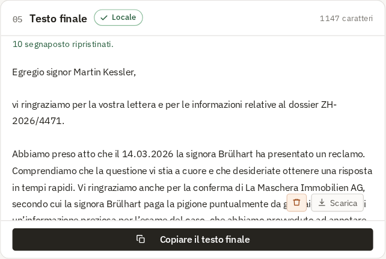
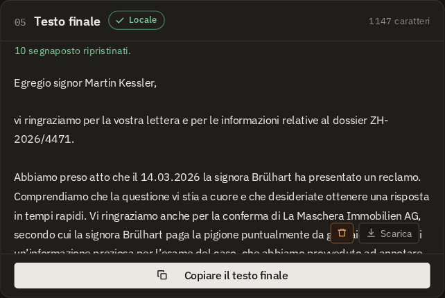
Un esito vuoto non è un via libera. Un PDF scansionato senza livello di testo produce un errore motivato, non «nessun dato personale trovato». Uno strumento che lì rassicura è più pericoloso di uno che tace del tutto.
Tre livelli, non soltanto «un’IA»
| Livello | Che cosa fa |
|---|---|
| 1 · Cifre di controllo | Numero AVS, IDI, IBAN, riferimento QR, carta di credito, GLN. Cifra valida → mascherare, anche se il modello tace. Non valida → scartare, anche se il modello segnala. |
| 2 · Schemi con àncora di contesto | Numero di telefono, NPA, targa, categoria di permesso, numero di pratica e altri. Vengono riconosciuti tramite parole d’àncora in quattro lingue e non hanno precedenza sul modello. Si aggiungono le tue regole personali: parole e schemi che definisci tu. Funzionano come gli schemi integrati. Per esempio un n. di caso interno o un n. di dossier interno. |
| 3 · Modello linguistico | Nomi, indirizzi, professioni, organizzazioni e date, cioè tutto ciò che non ha uno schema. |
Il modello è grande 1,2 GB ed è stato addestrato su dati sintetici. Non ha mai visto un documento reale. Indicazioni tecniche sul modello.
Tre cose che semplificano il lavoro
Pensato per il lavoro di tutti i giorni
Si adatta alla finestra e attende in background
Se la finestra è stretta, circa metà dello schermo o su un portatile compatto, MASCHERA dispone le sei aree una sotto l’altra, nell’ordine del lavoro: originale, mascherato, vocabolario, prompt, risposta, testo finale. Su Windows e Linux la X non chiude la finestra: MASCHERA si riduce a icona accanto all’orologio. Il modello resta caricato e al prossimo documento la finestra torna con un clic, senza attesa.
Con GNOME l’icona appare solo con l’estensione «AppIndicator». Senza, la X chiude come al solito.
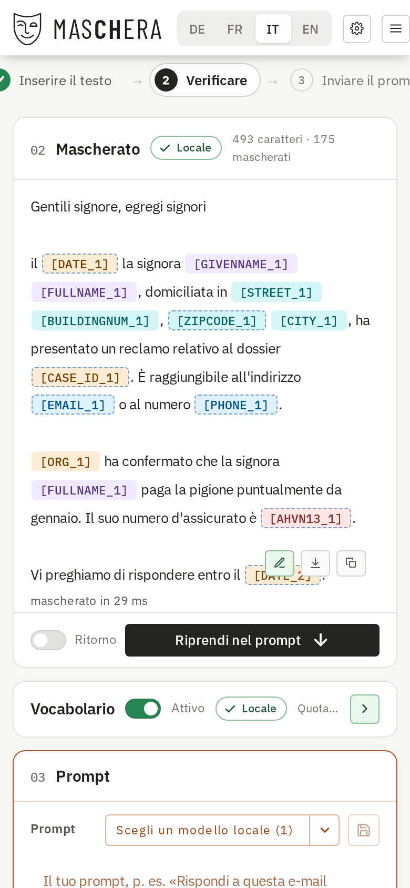
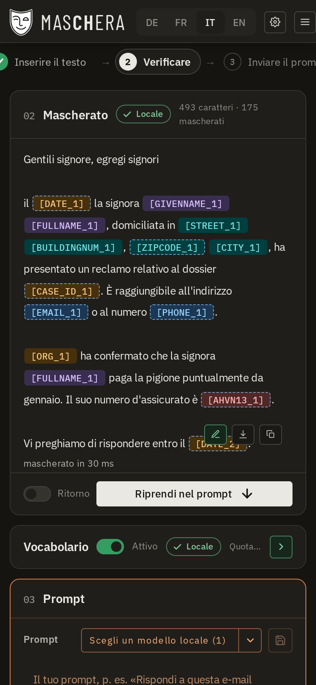
Troppo mascherato? Si torna indietro con un clic
Nel dubbio MASCHERA maschera piuttosto una parola in più che una in meno. In un documento lungo può quindi sostituire anche il nome di un’azienda o un luogo che vuoi lasciare. Nel testo: un clic destro su un segnaposto mostra il valore originale e la sua provenienza; lì rimuovi la maschera o scegli un’altra categoria. Nel vocabolario: ogni riga ha una × rossa. Un clic toglie il segnaposto in tutto il documento: se [ORG_1] compare cinque volte, il nome dell’azienda torna leggibile ovunque.
Funziona anche al contrario: seleziona una parola, scegli una categoria con il clic destro, ed è mascherata ovunque. Ciò che deve restare sempre in chiaro, per esempio le località, si imposta una volta nelle impostazioni.
Basta trascinare, anche le e-mail
PDF, Word (.docx), messaggi Outlook (.msg), e-mail (.eml), intere caselle (.mbox) e file di testo si trascinano direttamente sulla finestra. MASCHERA li legge e mostra il testo; si maschera solo al tuo clic. Dal programma di posta spesso funziona direttamente: trascina un messaggio da Thunderbird o da Outlook su Windows, fatto. Apple Mail non consegna un file trascinando: prima trascina il messaggio sulla scrivania e poi nella finestra. MASCHERA te lo dice anche.
Un PDF scansionato senza livello di testo dà un messaggio chiaro, non «nulla trovato».
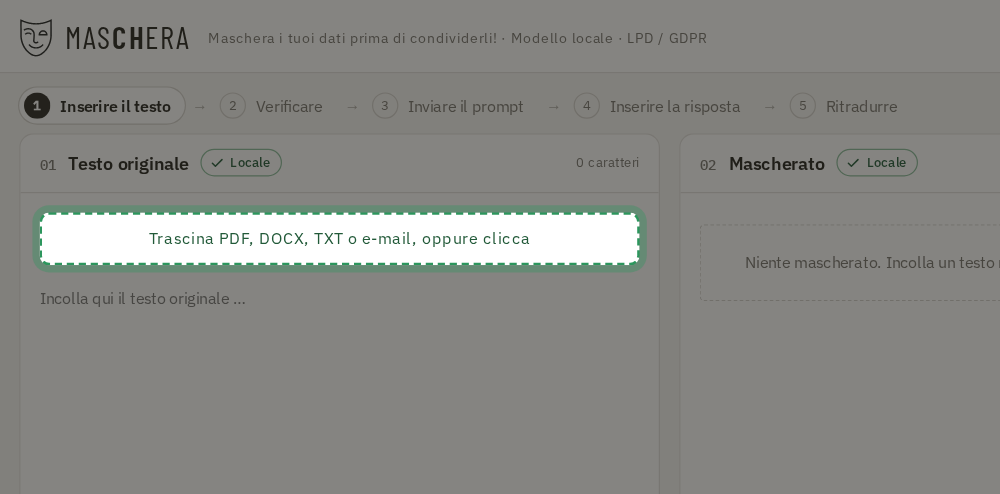
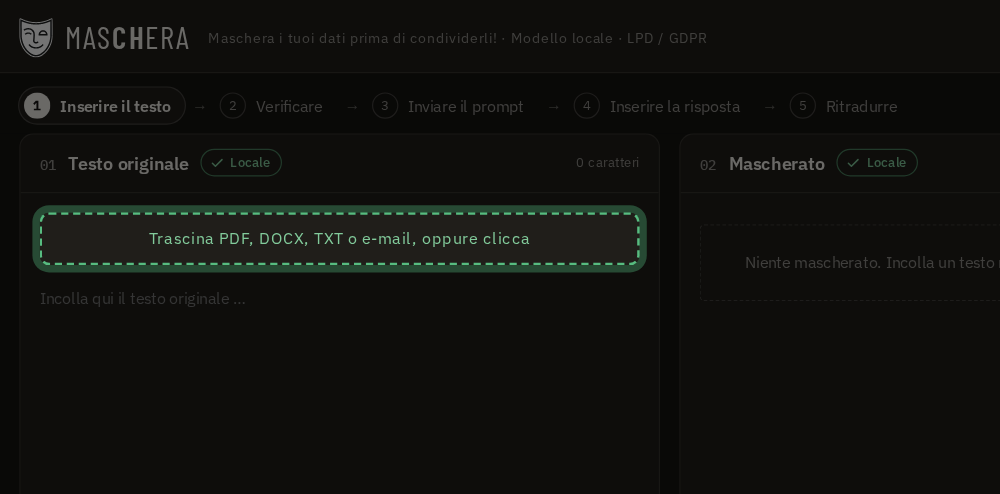
La sezione più importante
MASCHERA ti toglie il lavoro, non la responsabilità.
Nessuno strumento trova ogni dato personale. Guarda il testo mascherato prima di trasmetterlo. Per questo MASCHERA mostra ogni occorrenza a colori e con la sua provenienza.
Che cosa significa «provenienza»
Ogni occorrenza mostra da dove viene: da un numero verificato, da uno schema con contesto, o dal modello linguistico. Un numero AVS con cifra di controllo valida è riconosciuto con certezza, una supposizione del modello merita una seconda occhiata.
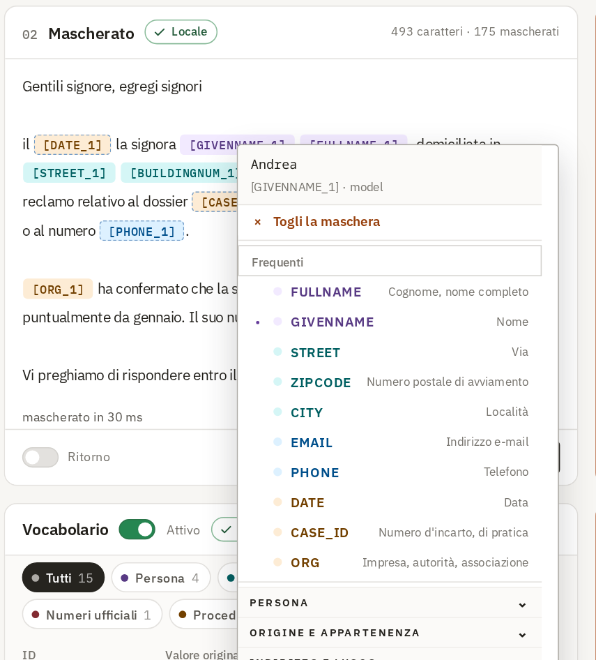
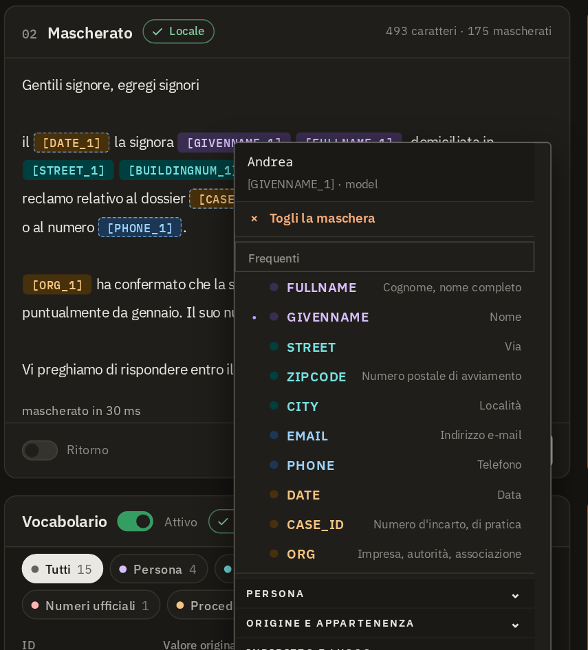
Con un clic destro su un’occorrenza modifichi la marcatura: scegli un altro tipo di dato oppure rimuovi la maschera.
Che cosa puoi fare se manca qualcosa
Cinque possibilità, tutte presenti nell’applicazione.
| Correggere a mano | Il testo mascherato è modificabile. I segnaposto come [FULLNAME_1] restano al loro posto e alla fine vengono riconvertiti. |
| Regole proprie | Parole e schemi tuoi, mascherati in aggiunta. Il nome di un progetto, una sigla interna, un soprannome. |
| Tipi in chiaro | Puoi lasciare stabilmente singoli tipi in chiaro. Vengono riconosciuti, ma non sostituiti. Chi vuole conservare le località lo imposta una volta. |
| Riconvertire | Incolli la risposta del servizio, e i valori reali ritornano. |
| Anonimizzare definitivamente | Mascherare senza dizionario. Allora il procedimento non è più reversibile, e l’applicazione te lo dice prima. |
MASCHERA sa fare entrambe le cose: reversibile per lavorare con un servizio di IA, irreversibile per un testo che esce di casa così com’è.
Scaricare
Quale file prendo?
Nessun modulo di registrazione, nessuna richiesta di e-mail, nessuna newsletter. Il file è lì, lo si scarica, fine.
Linux
AppImage: un unico file eseguibile, il modello è incluso. Scaricare, rendere eseguibile e avviare. Non viene installato nulla.
Flatpak: Il modello (1,3 GB) viene scaricato da Hugging Face al primo avvio dell’applicazione.
Flatpak0,3 GBWindows
Programma d’installazione per Windows 11, 64 bit. Si installa senza diritti di amministratore, il modello è incluso.
Windows1,4 GBServer
Docker, per l’esercizio come servizio. L’interfaccia si apre nel browser. Il modello è incluso. Il server non conserva nulla: nessun documento, nessun dizionario, nessun registro. Dopo la risposta tutto è dimenticato.
Docker4,2 GBmacOS
Immagine disco per Mac con chip Apple (M1 o più recente). Il modello è incluso. L’app non è firmata: dopo averla trascinata in «Programmi», digita una volta nel «Terminale» xattr -dr com.apple.quarantine /Applications/MASCHERA.app, altrimenti non si apre.
Tutti i file si trovano nelle pubblicazioni su GitHub, insieme a SHA256SUMS per la verifica.
L’avvertenza sul modello
Il modello è grande 1,2 GB. L’AppImage, il programma d’installazione per Windows e l’immagine macOS lo portano con sé. Il Flatpak lo scarica una volta al primo avvio. Proviene da una fonte indicata, viene verificato con una cifra di controllo e viene scaricato solo dopo il tuo consenso. Chi non ha il wifi a portata di mano rifiuta e lo scarica un’altra volta. Dopo, tutto funziona offline allo stesso modo.
AppImage o Flatpak?
AppImage è un unico file: scaricare, rendere eseguibile e avviare. Non viene installato nulla. Flatpak si integra nella gestione dei pacchetti e si aggiorna con essa.
Entrambi portano con sé le proprie librerie e sono quindi indipendenti dalla versione della tua distribuzione. Sui sistemi Arch, Flatpak funziona benissimo; per questo non esiste un pacchetto Arch a parte.
Domande frequenti
Domande e risposte
Come maschero o anonimizzo i dati personali di un documento prima di chiedere a ChatGPT o Claude?
Apri il documento in MASCHERA o incolla il testo e clicca su «Mascherare». Nomi, numeri AVS, indirizzi e altri dati personali vengono sostituiti da segnaposto come [FULLNAME_1]. Controlli il risultato, lo copi nel servizio che preferisci e incolli di nuovo la risposta: MASCHERA reinserisce i valori reali.
MASCHERA ha bisogno di una scheda grafica o di una connessione Internet?
No. Il riconoscimento gira su una normale CPU, senza GPU. Durante l’uso non viene scaricato né inviato nulla, salvo se clicchi su «Cerca aggiornamenti». L’AppImage, il programma d’installazione per Windows e l’immagine macOS contengono il modello; il Flatpak lo scarica una volta al primo avvio, dopo il tuo consenso.
Quali identificativi svizzeri riconosce MASCHERA?
Il numero AVS, l’IDI, l’IBAN, il riferimento QR, gli identificatori di edificio e di abitazione (EGID/EWID), la categoria di permesso, la targa e il numero RCC, ciascuno con la relativa cifra di controllo, se esiste. In tutto sono 45 tipi di dati personali, in tedesco, francese, italiano e inglese.
È un’anonimizzazione ai sensi della legge sulla protezione dei dati?
No, ed è voluto. Finché il dizionario esiste, l’operazione è reversibile; secondo la nLPD i dati restano quindi dati personali. Si tratta di pseudonimizzazione. Per un testo che viene trasmesso definitivamente, mascheri senza dizionario: allora l’operazione non è più reversibile.
Quali file può leggere MASCHERA?
PDF con livello di testo, Word (DOCX), e-mail (EML, MSG di Outlook, MBOX), TXT, MD, CSV e JSON. Un PDF scansionato senza livello di testo restituisce un errore motivato, non «nessun dato personale trovato».
In che cosa MASCHERA si distingue da Microsoft Presidio?
Presidio è un framework aperto per sviluppatori che riconosce e maschera i dati personali. Conosce identificativi di oltre venti Paesi, ma nessuno della Svizzera; andrebbero aggiunti da sé. MASCHERA è un’applicazione pronta all’uso per documenti svizzeri, con un’interfaccia per controllare e ripristinare i valori.
Posso anche anonimizzare un documento in modo definitivo?
Sì. Di norma MASCHERA maschera in modo reversibile: con il dizionario i valori reali tornano al loro posto. Per un testo che viene trasmesso o pubblicato, mascheri senza dizionario; allora l’operazione non è più reversibile. Controlla comunque se nel testo restano indizi indiretti su una persona.
| MASCHERA | Microsoft Presidio | |
|---|---|---|
| Pensato per | Documenti svizzeri | Testi generici, estendibile |
| Identificativi svizzeri | Integrati, con cifra di controllo | Nessuno nell’elenco dei tipi supportati |
| Forma | Applicazione per Windows, macOS, Linux e Docker | Libreria Python e servizio da integrare in altri programmi |
| Funziona in locale | Sì | Sì |
| Licenza | MIT (codice sorgente) | MIT |
Stato a ottobre 2026, secondo l’elenco dei tipi supportati nella documentazione di Presidio.
Dove si trova tutto il resto
La parte tecnica è tenuta aggiornata lì
Quanto bene misura il modello, come è stato addestrato, come è costruito il programma: tutto questo sta lì e lì viene tenuto aggiornato.
Codice sorgente e versioni
Come è costruito, quale versione del programma lavora con quale modello, tutte le verifiche.
Il modello
Quanto è buono il modello, come è stato addestrato, quali tipi di dati conosce.
Segnalare un errore
Che cosa non è stato riconosciuto, che cosa è stato sostituito male, che cosa manca.
Note legali
Responsabile
| Nome | Rodolfo Semprevivo |
|---|---|
| Paese | Svizzera |
| Contatto | tramite GitHub Issues |
| Web | www.maschera.ch |
Scopo
MASCHERA è uno strumento per la mascheratura locale di dati personali in documenti svizzeri. È messo a disposizione come software aperto.
Questo sito
Il sito è ospitato da Hostpoint AG in Svizzera. Alla consultazione Hostpoint tratta i dati tecnicamente necessari, come l’indirizzo IP, nei suoi log del server; i dettagli si trovano nell’informativa sulla privacy di Hostpoint. Il sito stesso non imposta cookie, non raccoglie statistiche e non carica nulla da server di terzi. I file da scaricare si trovano su GitHub (GitHub, Inc., USA).
L’applicazione
MASCHERA elabora i tuoi documenti esclusivamente sul tuo dispositivo. Nessun contenuto viene trasmesso all’editore o a terzi, non vengono raccolti dati d’uso e non vengono impostati cookie. L’editore non ha quindi conoscenza dei dati trattati e non ne è responsabile ai sensi della LPD. La responsabilità dei dati resta tua. Non appena incolli un testo mascherato in uno strumento IA, valgono le condizioni di quel fornitore.
Responsabilità
MASCHERA è fornito senza garanzia. Il riconoscimento dei dati personali è automatico e non è completo: può tralasciare indicazioni e nel dubbio maschera troppo. La verifica del testo mascherato prima della trasmissione spetta a te. Ogni responsabilità per danni derivanti dall’uso è esclusa nei limiti di legge. Dei contenuti dei siti collegati rispondono i rispettivi gestori.
Licenza
Codice sorgente MIT, pacchetti distribuiti AGPL-3.0, modello MIT. Il codice sorgente e le opere di terzi utilizzate, con le rispettive licenze, si trovano su GitHub.